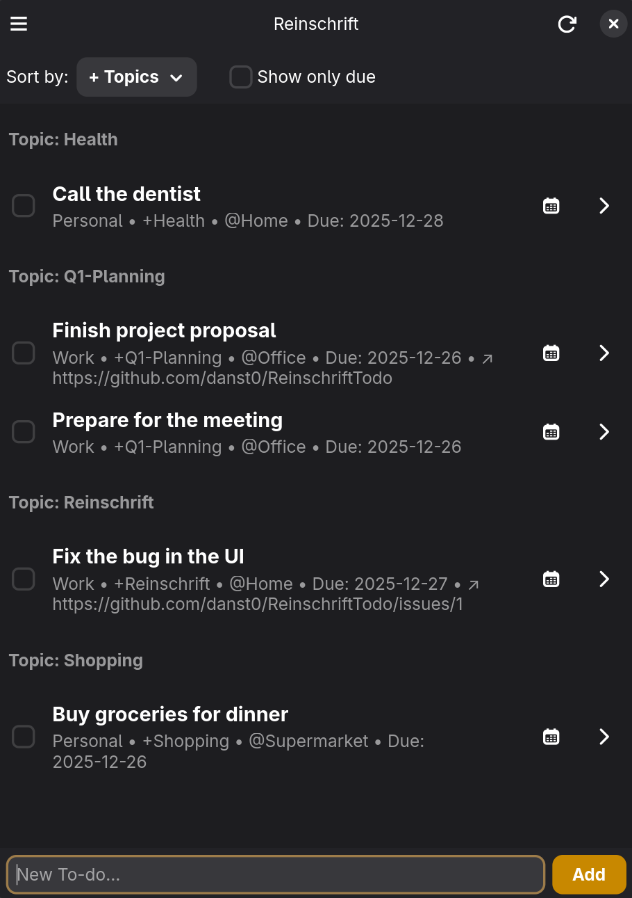

Free software · GNOME · plain text first
Your todo list is just a text file.
Reinschrift is a native GNOME app, a CLI and a self-hostable web app — all reading and writing one Markdown file. Version it with Git, sync it with Nextcloud, open it in any editor. No database. No silo. No lock-in.
- [x] Renew passport ✅ 2026-06-01 - [ ] Fix bike light +garage @home rec:monthly - [ ] Buy oat milk +groceries @store due:2026-06-12
01 The format
One line per task. Readable by you, parsable by machines.
Inspired by todo.txt, but living happily inside ordinary Markdown checklists — the kind every editor, forge and notes app already renders.
+projectproject, quotes allowed@contextcontext or locationdue:…due date, optional timerec:weeklyrecurrence on completion~note:"…"free-form note^ID123stable reference ID02 Three apps, one file
Desktop, terminal and browser — pick your surface.

a.GNOME desktop
Native GTK4/libadwaita. My Day planning, search, multi-select, voice input via local Whisper — and live reload when the file changes underneath.
b.CLI
For terminal workflows and scripting — with JSON output.
c.Web app · PWA
Self-hosted Flask app with swipe gestures, pull-to-refresh and OIDC login. Installable on your phone as a PWA — your todos everywhere, still one file.
03 Everyday features
Plain text underneath. Comfort on top.
WebDAV / Nextcloud sync
Point all apps at the same file — locally or on your cloud. External edits are picked up live.
My Day
A daily planning view: pick what today actually is about.
Recurring tasks
rec:daily, rec:weekly, rec:monthly — completed tasks re-spawn themselves.
Search, filter, sort
By project, context or due date — consistent across all three apps.
Voice input
Local transcription via Whisper on the desktop, Web Speech API in the browser.
AI assistance
Natural-language task parsing and semantic duplicate detection via your own Ollama — nothing leaves your machine.
Six languages
German, English, Spanish, French, Japanese, Swedish.
Free software
GPL-3.0-or-later. One repo: Rust core, GTK app, CLI and Flask web app.
04 Install
Take the desktop app, the CLI, or host it yourself.
GNOME desktop
The recommended way on any Linux distribution.
Arch Linux
GUI and CLI from the AUR, built from the release tag.
aur.archlinux.org/packages/reinschriftSelf-host the web app
Pre-built image on GHCR, published on every release. OIDC, WebDAV and credentials via environment variables.
docker-compose example on GitHub